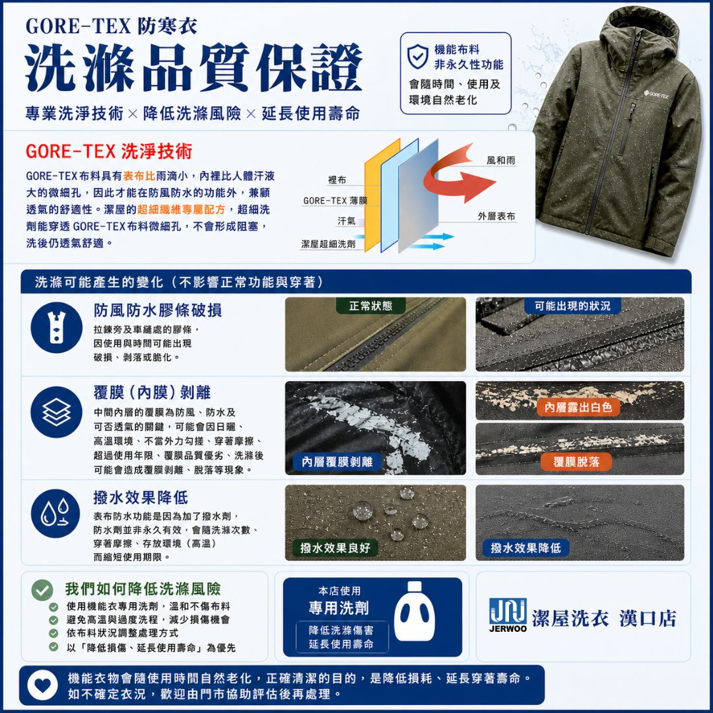

拉鍊旁、車縫處與接縫膠條，可能因長期使用或收納而出現破損、剝落、裂痕或脆化。清洗後這些既有老化痕跡可能變得更明顯。
洗護前評估
GORE-TEX 機能衣洗護注意事項
GORE-TEX 與防水透氣機能衣會因穿著、收納、汗垢與使用年限，影響膠條、內膜、覆膜與撥水狀態。潔屋會先檢視衣況與洗標，再安排合適的洗護方式。
膠條檢查
內膜確認
撥水狀態
衣況評估

機能布料洗護前會確認的重點
以下狀況多與衣物使用時間、材質老化、環境濕度、汗垢油污累積與原本膠膜狀態有關。洗護前會先檢視，讓處理方式更貼近實際衣況。
中間內層覆膜負責防風、防水與透氣，若因日曬、高溫、汗氣、不當外力摩擦或超過使用年限而劣化，洗後可能出現白化、脫落或剝離。
表布撥水功能會因清洗次數、穿著摩擦、存放環境與高溫逐漸縮短使用期限。若原本撥水已下降，洗後可能需要另外評估撥水整理。
我們如何降低洗護傷害
重點是先了解衣況，再用適合機能布料的方式處理，兼顧清潔、透氣、防水結構與衣物壽命。
- 使用機能衣專用洗劑，避免殘留與不適合的洗劑堵塞微細孔。
- 依洗標、布料狀況、髒污程度與膠條狀態調整處理方式。
- 避免高溫與過度洗程，減少對機能布料、貼合處與膠膜的刺激。
- 以「降低損傷、延長使用壽命」為優先，不做過度承諾。
常見問題
客人送洗 GORE-TEX、防寒衣與雪衣雪褲前，最常詢問的洗護問題。
GORE-TEX 可以洗嗎？
可以評估清洗，但要依洗標、材質、膠條、內膜與衣況決定方式。若已經脫膠、覆膜剝離或塗層老化，洗護前會先確認可處理範圍。
洗完防水效果會不會變差？
機能布料的防水與撥水效果會隨時間、使用與環境自然下降。清洗可去除汗垢髒污，但無法讓已老化的膠膜或撥水層完全恢復。
為什麼洗前要做衣況評估？
因為有些變化不是洗滌當下才形成，而是衣物已存在的自然老化或材質劣化。先檢視膠條、內膜、覆膜與撥水狀態，能更準確安排洗護方式。
機能衣老化可以洗回來嗎？
無法。清洗能處理髒污、汗垢與異味，協助維持布料狀態；但已自然老化、折舊、脫膠、內膜剝離或塗層劣化的位置，不能靠洗滌復原。